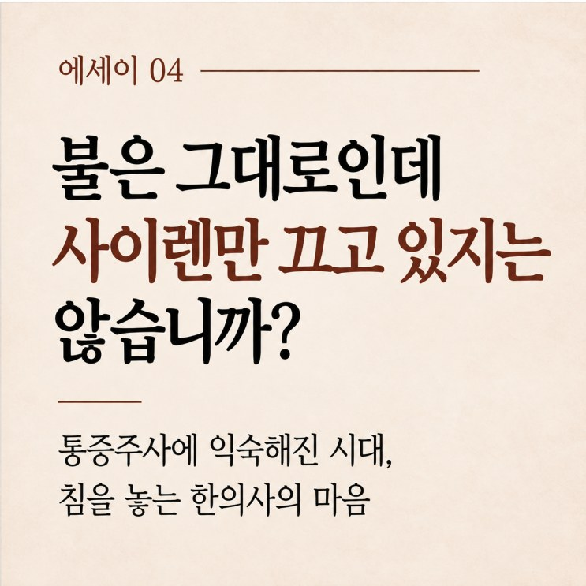

불은 그대로인데 사이렌만 끄고 있지는 않습니까?
통증주사에 익숙해진 시대, 침을 놓는 한의사의 마음
목차 보기

제가 22년 동안 진료하면서 서서히 느끼고 있는 환자분들의 변화가 하나 있습니다.
바로, 통증클리닉에서 주사치료를 받고 오시는 분들이 많아졌다는 것입니다.
예전에는 그리 자주 듣지 못했던 이야기를 이제는 진료실에서 자연스럽게 듣게 됩니다.
"원장님, 통증클리닉에서 주사 한 대 맞으니까 바로 안 아프던데요."
"침은 여러 번 맞아야 하잖아요. 주사 한 방이면 금방 괜찮아지는데요."
바쁜 현대인들에게 통증을 빠르게 줄여주는 주사가 얼마나 매력적이겠습니까.
아픈 몸을 이끌고 여러 번 치료받으러 다니는 것보다 주사 한 번 맞고 일상으로 돌아갈 수 있다면 누구라도 그쪽에 마음이 끌릴 것입니다.
저 역시 통증이 심한 환자에게 적절한 주사치료가 도움이 될 수 있다는 사실을 잘 알고 있고, 필요할 때는 권하기도 합니다.
하지만 그런 이야기를 들을 때면 한편으로는 걱정스러운 마음이 듭니다.
통증이 사라졌다고 해서, 통증을 일으킨 손상 조직까지 모두 회복된 것은 아닐 텐데 하는 걱정입니다.
불이 났는데 사이렌만 끄고 있지는 않습니까?
어느 건물에서 불이 났다고 생각해 보겠습니다.
불이 나자 화재경보기가 요란하게 울립니다.
그런데 누군가 경보음이 너무 시끄럽다며 사이렌부터 부숴버렸습니다.
이제 조용해졌습니다.
하지만 불은 여전히 타고 있습니다.
저는 때때로 통증을 대하는 우리의 태도에서 이런 모습을 떠올립니다.
통증은 우리 몸이 보내는 경고 신호일 수 있습니다.
몸을 지나치게 사용하고 있으니 이제 좀 쉬라는 신호일 수도 있고, 손상된 조직이 더 이상 다치지 않도록 조심하라는 신호일 수도 있습니다.
그런데 통증의 원인을 충분히 살펴보지 않은 채 당장 아프지 않게 만드는 데만 집중한다면, 사이렌은 꺼졌지만 문제는 그대로 남아 있을 수 있습니다.
물론 모든 통증주사가 이런 것은 아닙니다.
주사의 종류에 따라 염증을 조절하거나 통증의 원인이 되는 신경 자극을 완화할 수 있고, 심한 통증을 줄여 환자가 잠을 자고 재활운동을 시작하도록 돕기도 합니다.
제가 우려하는 것은 주사라는 치료법 자체가 아닙니다.
통증이 사라졌다는 이유만으로 몸이 다 나았다고 생각하는 것입니다.
사이렌을 조용하게 만드는 것도 때로는 필요합니다.
하지만 사이렌이 멈췄다고 해서 불까지 꺼진 것은 아닙니다.
통증이 줄어든 뒤에도 손상된 조직이 충분히 회복되었는지 살펴야 하는 이유입니다.
20여 년 전 진료실의 풍경
제가 한의사 생활을 시작한 것은 20여 년 전입니다.
그때와 지금의 진료실을 떠올려 보면 환자들의 모습이 참 많이 달라졌다는 생각이 듭니다.
당시에는 허리나 어깨, 무릎이 아프면 꾸준히 침을 맞으러 오시는 분들이 많았습니다.
일주일에 두세 번씩 오시는 분들도 있었고, 통증이 심하면 매일같이 찾아오시는 분들도 있었습니다.
그분들은 하루아침에 모든 통증이 사라지기를 기대하기보다는, 치료받고 쉬고 다시 치료받으면서 조금씩 좋아지는 과정을 비교적 자연스럽게 받아들이셨습니다.
"원장님, 어제보다 조금 덜 아픕니다."
"이제 팔이 전보다 좀 올라갑니다."
그런 이야기를 나누며 회복의 경과를 함께 지켜보곤 했습니다.
그 시절을 떠올리면 분명히 느껴지는 차이가 하나 있습니다.
예전에는 몸이 회복하는 데 시간이 필요하다는 사실을 지금보다 더 자연스럽게 받아들이는 환자들이 많았던 것 같습니다.
요즘은 모든 것이 빨라졌습니다.
음식도 빨리 나오고, 물건도 하루 만에 배송되며, 원하는 정보는 몇 초 만에 찾아볼 수 있습니다.
그러다 보니 치료에서도 빠른 결과를 기대하는 마음이 커진 것은 아닐까요.
"오늘 침 맞으면 내일 낫습니까?"
"한 번에 끝나는 치료는 없습니까?"
이런 질문을 들을 때면 저는 가끔 생각합니다.
세상의 속도는 빨라졌지만, 우리 몸이 회복하는 데 필요한 시간까지 그만큼 빨라진 것은 아니라고 말입니다.
주사를 바라보는 시선도 달라졌습니다
20여 년 전에는 주사에 대한 환자들의 인식도 지금과는 조금 달랐습니다.
제가 약침치료를 권하면 이런 질문을 하는 분들이 종종 있었습니다.
"원장님, 그 주사 몸에 해롭지 않아요?"
"주사는 되도록 안 맞는 게 좋은 것 아닙니까?"
당시 제 진료실에서는 주사라는 치료 행위 자체를 조심스럽게 생각하는 환자들을 적지 않게 만날 수 있었습니다.
그런데 세월이 흐르면서 분위기가 달라졌습니다.
요즘은 통증클리닉에서 주사를 맞는 일을 상당히 익숙하고 편안하게 받아들이는 분들이 많습니다.
오히려 주사치료를 받지 않으면 제대로 치료받지 않은 것처럼 느끼는 분들도 있는 듯합니다.
주사치료 기술이 발전하고, 실제로 도움을 받은 경험이 쌓였으니 그럴 만도 합니다.
하지만 저는 가끔 이런 생각을 합니다.
우리가 치료의 효과를 판단할 때 너무 빠른 통증 감소에만 높은 점수를 주고 있는 것은 아닐까요?
주사를 맞고 한 시간 만에 통증이 줄어드는 것과, 손상된 힘줄이나 관절이 회복되는 것은 서로 다른 이야기입니다.
빠른 진통 효과는 분명 가치가 있습니다.
그러나 그 효과가 얼마나 지속되는지, 환자가 이전보다 더 건강하게 움직일 수 있는지, 같은 일을 해도 재발하지 않는지가 함께 중요합니다.
침을 대하는 태도도 변했습니다
침치료에 대한 환자들의 반응 역시 많이 달라졌습니다.
예전에는 비교적 굵은 침으로 강한 자극을 주어도 잘 견디는 환자들이 많았습니다.
특히 연세가 많은 분들 가운데는 일부러 강한 침 자극을 원하시는 분들도 있었습니다.
"원장님, 침이 좀 묵직하게 들어와야 맞은 것 같지요~~"
그런 말씀을 하시는 분들도 계셨습니다.
그런데 요즘은 침을 무서워하는 환자들이 많아졌다는 것을 느낍니다.
"침 많이 아픈가요?"
"살살 놔주세요."
저 역시 환자들의 이러한 변화를 느끼면서 점차 가늘고 작은 침을 주로 사용하게 되었습니다.
환자가 편안하게 치료받을 수 있도록 하는 것도 의료인의 중요한 역할이기 때문입니다.
사실 침 자극은 무조건 강하다고 좋은 것만은 아닙니다.
강한 자극이 모든 질환에서 더 나은 효과를 보인다는 근거도 충분하지 않습니다.
환자의 건강 상태와 치료 부위, 통증 민감도에 따라 적절한 자극을 선택해야 합니다.
그럼에도 제 마음 한편에는 작은 걱정이 있습니다.
침이 아플 것이라는 막연한 두려움 때문에, 침치료를 경험해 보기도 전에 포기하는 분들이 점점 늘어나는 것은 아닐까 하는 걱정입니다.
침술은 오랜 세월에 걸쳐 발전해 온 동양의 소중한 의학적 유산입니다.
저는 그 치료법이 단지 오래되었다는 이유로 존중받아야 한다고 생각하지는 않습니다.
실제로 환자에게 도움이 되는 부분이 무엇인지 끊임없이 검증하고 발전시켜야 한다고 생각합니다.
하지만 충분히 알아보지도 않고, 경험해 보지도 않은 채 외면하기에는 아까운 치료법이라고 믿습니다.
침은 더디지만, 몸이 스스로 회복하도록 돕습니다
침은 맞을 때 따끔하고 뻐근할 수 있습니다.
한 번에 끝나지도 않고, 여러 번 오셔야 합니다. 번거로우시겠지요.
그래도 꾸준히 맞으시면 굳은 근육이 풀리고 혈액순환이 좋아져 움직임이 한결 편해지는 경우가 많습니다.
몸이 편해지면 적절한 운동과 재활도 시작할 수 있고, 몸은 그 시간 동안 스스로 회복할 기회를 얻게 됩니다.
무엇보다 침은 약물에 기대지 않고도 회복을 도울 수 있습니다.
그러니 꼭 주사나 약물이 필요한 상황이 아니라면, 침치료를 받으며 몸이 낫는 시간을 조금 기다려 주셨으면 합니다.
한 번에 끝나지 않는다는 이유로 그 과정의 가치를 작게 여기지는 않으셨으면 합니다.
사이렌이 아니라, 불이 꺼졌는지를
다시 처음의 사이렌 이야기로 돌아가 보겠습니다.
통증이 사라졌다고 불까지 꺼진 것은 아닙니다.
설령 불이 꺼졌다 해도, 타 버린 자리를 다시 세우는 데는 시간이 걸립니다.
그을린 벽을 걷어내고, 기둥을 다시 세우고, 사람이 살 수 있는 집으로 되돌리는 시간 말입니다.
다친 근육과 힘줄도 그렇습니다.
통증이 멈춘 뒤에도 몸 안에서는 상한 조직을 걷어내고 새로 채우는 일이 몇 주, 길게는 몇 달 동안 이어집니다.
침이 그 공사를 대신해 드릴 수는 없습니다.
다만 몸이 그 일을 잘 해낼 수 있도록 곁에서 거들 수는 있습니다.
통증을 빨리 없애려는 마음이 앞서, 몸이 다시 집을 짓는 시간까지 놓치지는 않으셨으면 합니다.
저는 그 시간을 환자분과 함께 지키는 한의사이고 싶습니다.
한방재활의학과 전문의 · 한의학박사 박장우